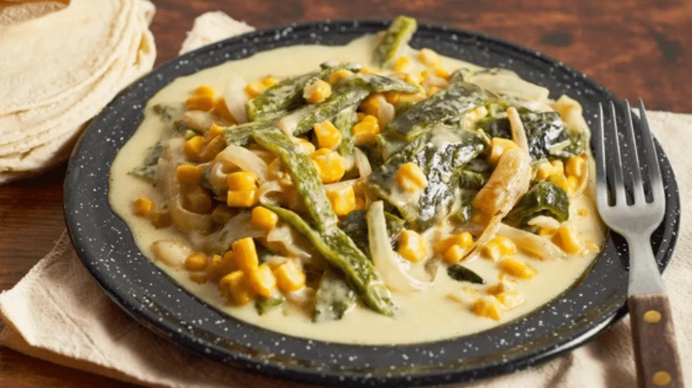
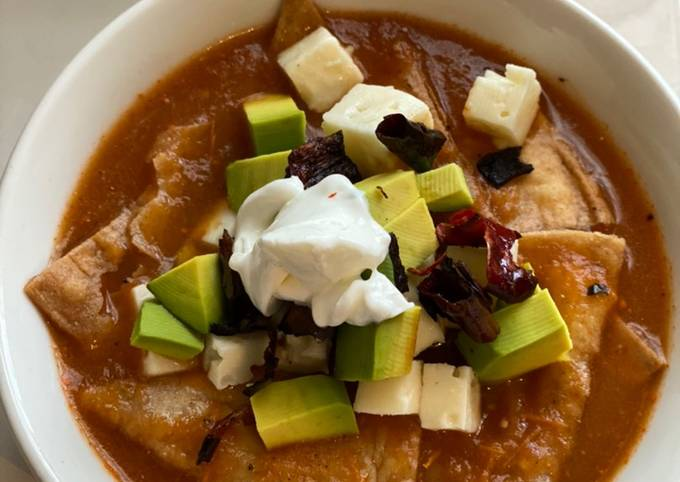
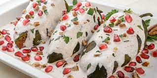
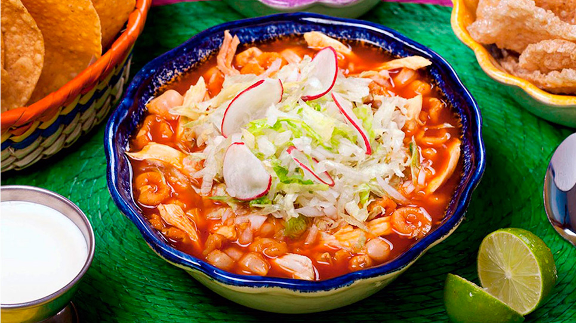

Ingredientes:
Medidas para cuatro porciones
-8 chiles poblanos
-2 cucharadas de aceite
-1/2 cebollas, fileteada
-1 diente de ajo
-2 pechugas de pollo, cortada en fajitas
-al gusto de sal y pimienta
-1 taza de grano de elote
-1 taza de crema ácida
-1 1/2 tazas de queso manchego, rallado
Preparación:
Asa los chiles poblanos en un comal a fuego alto, hasta quemar por completo. Colócalos en una bolsa de plástico, cierra y deja sudar alrededor de 20 minutos.
Una vez que los chiles hayan sudado, con ayuda de un cuchillo, retira la piel, desvena y quita las semillas. Corta en finas tiras y reserva.
Calienta una sartén a fuego medio con el aceite y cocina la cebolla y el ajo. Agrega las fajitas de pollo y cocina hasta dorar, sazona con sal y pimienta.
Agrega las rajas, los granos de elote y cocina 5 minutos. Añade la crema ácida y el queso y deja que se funda. Sazona con sal y pimienta.
Sirve sobre tortillas de harina o acompañado de arroz blanco.

Sopa Azteca
Ingredientes:
Medidas para cinco porciones
- 2 dientes de ajo
-1/2 cebollas blancas, cortada en trozos, para caldo
-4 jitomates, asado. para el caldo
-2 chiles pasilla, desvenado, sin semillas y remojado, para caldo
-1 chile guajillo, desvenado, sin semillas y remojado
-8 tazas de caldo de pollo
-1 taza de tortillas de maíz, asada al comal
-1 pizca de sal
-1 cucharada de aceite
-3 hojas de epazote fresco
-1 taza de tortillas de maíz, cortadas en tiritas
-1 taza de queso fresco, cortado en cubitos
-1/4 tazas de chile pasilla, cortado en aros y
-1 aguacate, rebanado y cortado en abanico o cubos
-1/2 tazas de crema ácida, para servir
Preparación:
Para el caldo, licúa el ajo, la cebolla, el jitomate, el chile pasilla, el chile guajillo, el caldo de pollo, la tortilla y una pizca de sal.
Calienta en una ollita a fuego medio el aceite, fríe la preparación anterior y agrega las ramitas de epazote, cocina el caldo durante 10 minutos para que el jitomate se cueza.
Sirve la preparación en un plato hondo, agrega las tortillas de maíz, el queso fresco, el chile pasilla, el aguacate y un toque de crema ácida. Disfruta.

Mole De Olla
INGREDIENTES:
Medidas para cinco porciones:
-500 g de Cuete de res cortado en trozos
-250 g de Chamorro de cerdo cortado en trozos
-250 g de Chambarete cortado en trozos
-40 g de Chiles anchos tostados y remojados en ½ tz de vinagre
-250 g de Cebolla blanca
-15 g de Dientes de ajo
-500 g de Calabacitas cortados en 4 partes
-1 kg de Elotes rebanados
-30 g de Rama de epazote
-c-n Sal
-40 ml Aceite de maíz
-2.5 lt Caldo de res
-Para la guarnición:
-125 g de Cebolla blanca picada
-50 g de Hojas de cilantro picadas
-50 g de Hojas de epazote
Preparación:
En el aceite caliente fría las carnes.
Reservar.
Muela los chiles con los ajos y la cebolla, añada a la combinación de carnes y fría a fuego medio.
Vierta el agua y deje cocinar a fuego bajo; a media cocción agregué las verduras y mantenga tapado hasta que las verduras estén cocidas.
Sirva acompañado de la guarnición.
Mixiotes De Pollo
INGREDIENTES:
Medidas para cinco porciones
-900 g de Pollo pierna y muslo
-40 g de Chile guajillo
-15 g de Chile morita
-30 g de Manteca de cerdo
-300 g de Jitomate guaje asado
-20 g de Ajo asado
-250 g de Cebolla fileteada
-1 g de Comino en polvo
-500 ml de caldo de pollo
-1 g de Hoja de aguacate
-80 g de Hoja de maguey
- c-n Sal
-c-n Pimienta negra molida
Preparación:
Blanquear los chiles en agua caliente.
Licuar los chiles con el jitomate, ajo, cebolla, comino, sazonar.
Freír en la manteca, rectificar sazón.
Marinar el pollo en la preparación anterior
Colocar el pollo sobre una hoja de maguey o papel sulfurizado.
Agregar una hoja de aguacate, salsear y cerrar con un hilo.
Cocinar al vapor o al horno por 1 hora aproximadamente.
Acompañar con frijoles refritos y arroz.
Birria De Res
INGREDIENTES:
Medidas para cinco porciones
-1.200 kg de Chambarete de res
-10 g de Ajo
-160 g de Cebolla
-2 g de Laurel, tomillo
-1 g de Clavo
-1 g de Pimienta gorda
-1 g de Orégano
-40 g de Chile guajillo
-20 g de Chile cascabel
-10 g de Chile morita
-5 g de Chile de árbol
-c-n Granulado de pollo
-50 ml de Vinagre de manzana
-200 g de Naranja
-25 ml de Aceite vegetal
-Tortillas hechas a mano:
-1 kg de Maza de maíz
-c-n Sal
-c-n Agua
-Guarnición:
-250 g de Cebolla
-30 g de Cilantro
-240 g de Limones
-Condimentos:
-c-n Sal
-c-n Pimienta molida
Preparación:
Cortar la carne en trozos medianos y cocer en agua con la cebolla, el ajo, las especias, la naranja partida a la mitad y sal,
Desvenar y despepitar los chiles, ablandarlos en un poco de agua caliente y licuar con vinagre y colar.
Refreír la preparación anterior en aceite.
Agregar el caldo de la carne.
Rectificar sazón y reducir.
Guarnición:
Cebolla picada
Cilantro picado
Tercios los limones
Tortillas de maíz hechas a mano:
Trabajar la masa con un poco de agua y agregar sal
Formar las tortillas con la máquina y cocer en la plancha.
Servir: la birria caliente en un plato hondo con tortilla caliente y la guarnición en recipientes separados.


Cuentas y canales de comida
Aqui les dejo dos links en donde van a encontrar recetas super ricas, aclarando estos canales no son mios